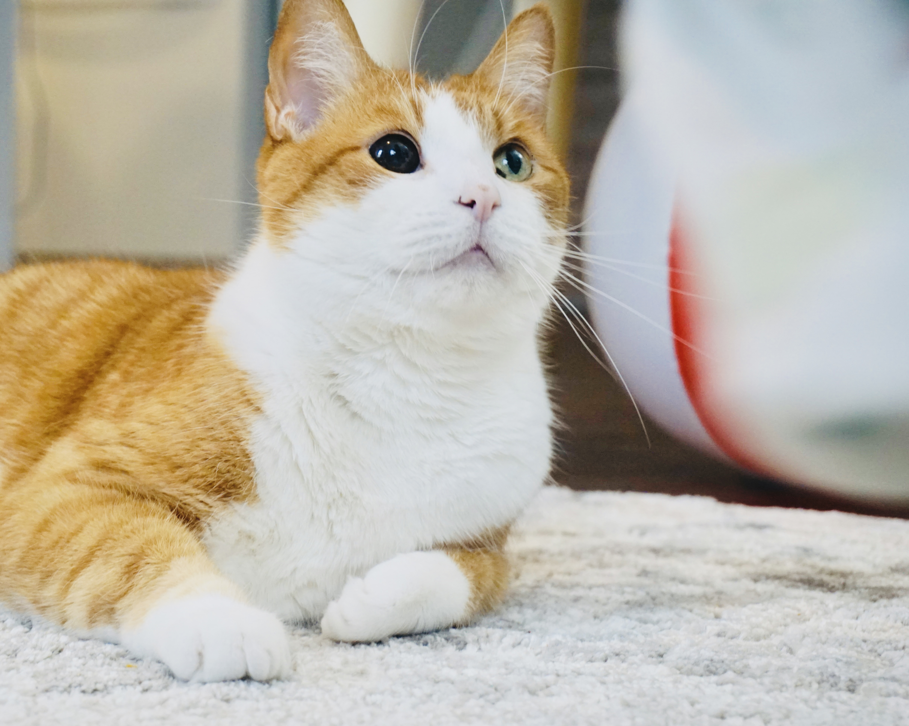

Life with My Family👨👩👧
I’m married and blessed with a daughter, and together, we navigate the beautiful chaos of life. There are moments of laughter and some tears, but each experience helps us grow stronger as time flies by. My husband may not be perfect, but he’s a good partner, and we balance each other through all the ups and downs of our journey together.
Living with a four-legged roommate 🐾  Mao Ge (Cat Bro in Chinese)
I’m living with a four-legged roommate named Mao Ge, a 12-year-old orange tabby who absolutely rules the house. He’s a laid-back king who prefers to spend his days napping in the sun, claiming the best sunny spots around the house as his personal throne. While he’s not the most active cat, he’s a master of relaxation, teaching me the art of slowing down and enjoying the simple pleasures of life. Whether he’s lazily stretching out under a patch of sunlight or giving me that ‘I’m in charge here’ look, Mao Ge makes sure everything runs on his schedule.

Exploring the World Through My Lens📸
One of my greatest passions is capturing the beauty of the world through photography. Whether I’m hiking through the mountains, exploring a new city, or simply soaking in nature, I love documenting those moments. Each photograph tells a story, from the breathtaking landscapes to the smallest, often unnoticed details. Traveling and hiking give me the perfect opportunity to not only explore new places but also to challenge myself to see the world from different perspectives, all while building a personal collection of memories I can look back on.
Baking Joys on the Weekend🍰
One of my favorite ways to unwind on the weekends is by baking. Whether I'm trying out a new recipe, perfecting a classic, or simply experimenting with ingredients, the process brings me both joy and relaxation. Each bake is an opportunity to create something delicious, from warm, freshly-baked bread to decadent cakes and pastries. The kitchen becomes my creative space, where I not only get to enjoy the fruits of my labor but also share them with family and friends. Baking has become a weekend ritual, offering me the perfect balance of creativity and comfort, with every batch adding to my collection of cherished recipes.
A Multilingual Journey 


As a native Mandarin speaker, I’ve always had a strong connection to the richness of the Chinese
language and culture. At work, I use English daily, which has become my professional language, enabling me to
connect with a global team and navigate international business contexts. Recently, I’ve embarked on the
exciting journey of learning French. My next language learning adventure is German  , and I'm excited to expand
my linguistic skills even further.
, and I'm excited to expand
my linguistic skills even further.